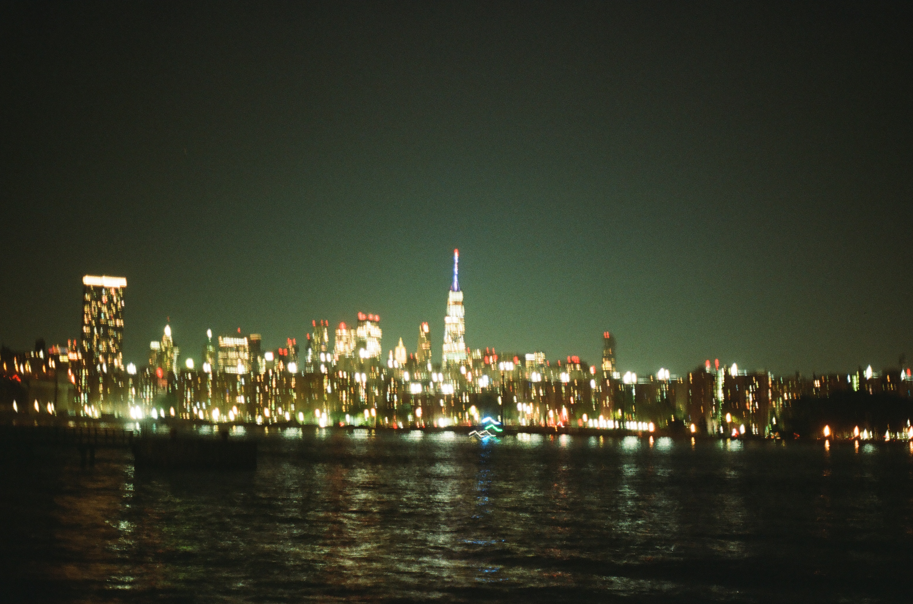

A few years ago I realized it feels nicer to have photo prints and hold your pictures instead of looking at them on a screen. I decided to get a film camera and a mirrorless camera shortly after. I love how film captures light and the process of taking the shot and not knowing how it turned out until the roll is developed. This gallery is a collection of my photos taken from both my Canon AV-1 film camera and mirrorless Fujifilm X-100T. These are from spending time with my friends, travelling, and more!
My Photos
-
